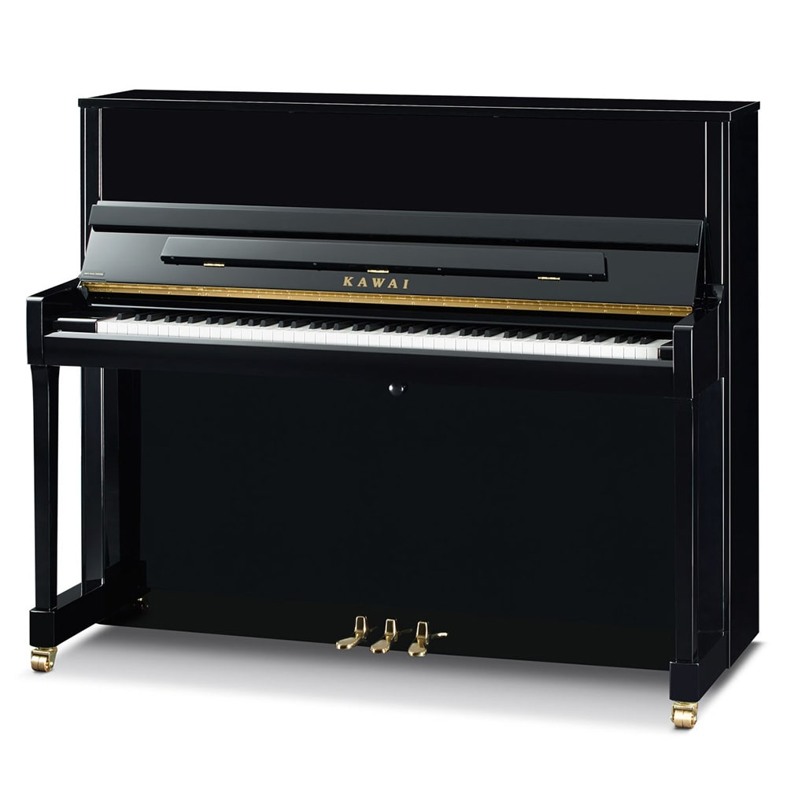
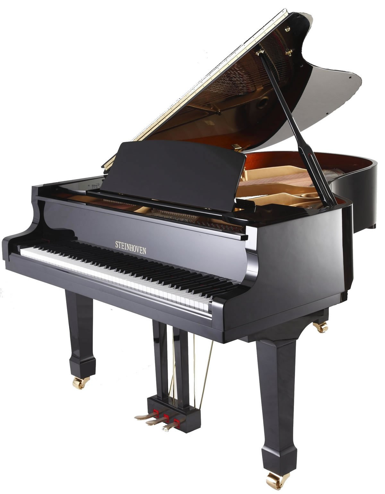
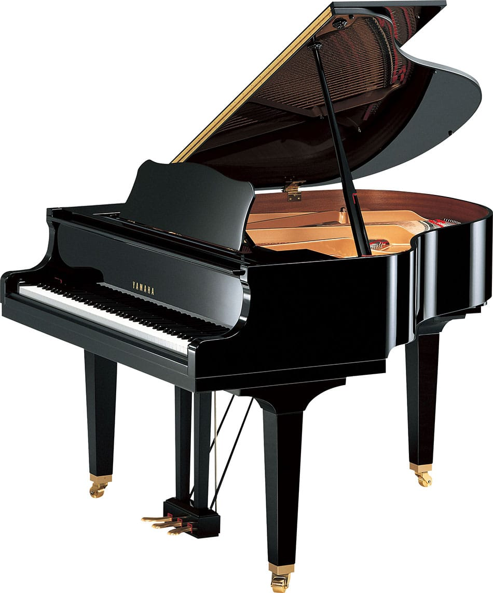

Kawai K-300 (12.295$)

The 48″ K-300 upright piano builds upon the award-winning legacy of its predecessor, the K-3, delivering uncommon touch and exquisite tone. The K-300 is equipped with our revolutionary Millennium III Upright Action designed with components made from carbon composite materials to provide ultra-responsive touch and exceptional musical expression. The K Series K-300 upright piano projects rich, pleasing tone through its tapered solid spruce soundboard that offers a wide dynamic range from thundering fortissmos to the most sensitive and delicate pianissimos. With elegant styling, responsive touch and richness of tone, the K-300 upright piano proudly extends its award-winning heritage by delivering unsurpassed performance that will satisfy the most discerning pianists.
-
Exclusive Millennium III Upright Action with ABS-Carbon Composites
-
Popular 48” Height for Home or Studio
-
Double Felted, Mahogany Core Hammers
-
Height Adjustable Bench
-
Available with Nickel Hardware
C. Bechstein Concert 8 (72.000$)

A dream piano
C. Bechstein Concert 8: an unsurpassed professional piano, in keeping with all the C. Bechstein instruments favored since more than 160 years for their unique sound, touch and durability. The C. Bechstein Concert 8 professional piano is a non plus ultra upright that clearly surpasses many run-of-the-mill grands. Its acoustic assembly, sound volume and colored voice, as well as its precise and highly responsive action, surprise even the most demanding musicians who are used to the touch and sound volume of grand pianos.
Nearly a grand and hand-made Germany
The acoustic assembly of the C. Bechstein Concert 8 upright is similar to that of the grands in the Masterpiece class. Among the features found in both the Concert 8 model and the C. Bechstein grands are the sophisticated dynamics, the colorful and even more subtly graduated timbre, and the optimized sound development. Moreover, the sound profile of the C. Bechstein Concert 8 upright has been improved and is now even more singing and enduring. Such outstanding characteristics explain why several great artists, including Simon & Garfunkel, Sir Simon Rattle and the Beatles, made this exceptional professional piano their favored working instrument. Ask your C. Bechstein dealer and find out about the finest-quality woods used for the piano parts and many other details that make up the exceptional quality of these top-class instruments. And if you visit the C. Bechstein production site, you’ll be fascinated as you discover the secrets of the making of the Concert 8, the “king of uprights”.
Bluthner Model S (82.599$)

Julius Bluthner established the Bluthner piano factory in 1853. Although he died in 1910, his 3 sons took over the company. During World War II, the factory was completely decimated and was rebuilt under national control of East Germany. By 1990, the Bluthner family resumed control and built new facilities just outside Leipzig in 1997.
Kuyruklu Piyanolar
STEINHOVEN SG148 BABY GRAND PIANO (9.720$)

The Steinhoven SG148 grand piano in Polished Ebony is an excellent choice where space is a consideration as the piano has been designed to fit into limited spaces. Constructed to the highest standards it offers tonal quality, touch, durability and value for money.The contemporary style and design has undergone extensive improvements to perfect the piano’s performance. Its graceful design and timeless qualities are all you would expect in this fine, truly impressive piano. A quality instrument of choice among professionals and music schools for its outstanding performance.
Steinhoven Grand Pianos are available in four different sizes: 148, 160, 170, 183 and 227cm. The beauty and harmony of them will enhance any home. Solid wood construction, iron cast frame, high quality strings, action and brass fittings brings them to the highest standard. All our Grand Pianos are built to the highest quality with the greatest attention to detail made throughout. They are all available at very competitive prices.
-
Designed to fit into limited spaces
-
Constructed to the highest standards
-
Offers tonal quality, touch, durability and value for money
-
A quality instrument of choice among professionals and music schools for its outstanding performance
YAMAHA GB1 BABY GRAND PIANO (12.330$)

These aren’t just baby grands. They’re our babies. Yamaha designers, engineers and craftsmen were challenged to bring out the expressive tone, subtle colors and dynamics of a conservatory grand from a more compact instrument. The GB1K and GC Series put the unmistakable sound of a Yamaha grand piano in more places, and in reach of more people, than ever before.
Room-filling sound
-
The GB1K and GC Series pianos may be small, but they have a powerful resonance and tone that brings out the subtle nuances of every note.
Rich, resonant woods
-
Great pianos start with the finest wood. Soundboards and ribs are crafted by Yamaha artisans using hand-selected spruce from our Kitami Wood Mill in Hokkaido, Japan.
Back posts, forward thinking
-
These pianos share the robust back post design of our conservatory series pianos, giving them the powerful resonance, durability and tuning stability you might expect in a larger grand piano.
Hand-wound Yamaha bass strings
-
Bass strings are crafted and hand wound under the watchful eye of Yamaha artisans exclusively for each piano.
Advanced V-Pro frame
-
Yamaha was the first company to use an advanced Vacuum Shield Mold casting technology called V-Pro to create a stronger, lighter, more durable frame worthy of the grandest grand piano. Every frame is built to our exacting specifications at our Iwata Forge in Japan.
A hammer like no other
-
Our unique hammer felt, crafted in Japan, has been designed to bring out the subtle tones of the instrument, and is tested to withstand fluctuations in temperature and humidity and continue playing beautifully for years to come.
STEINWAY & SONS BOSTON GP163 GRAND PIANO (30.700$)

Introducing the new Performance Edition II by Boston, featuring a Pommele Sapele veneer on the inside rim (ebony pianos only), bronze-painted and lacquered plate, black felts, and a rescaled bass and treble strings.
The Boston PE II builds on the best-in-class features that Boston is known for, including a Hard Rock Maple inner rim and Octagrip™ pinblock. At 163 cm, the GP-163 Performance Edition is small enough to fit in any home, but possesses the sound of a much larger grand — thanks to its widetail design.
Dijital Piyanolar
Dijital Kuyruklu Piyanolar
Aksesuarlar